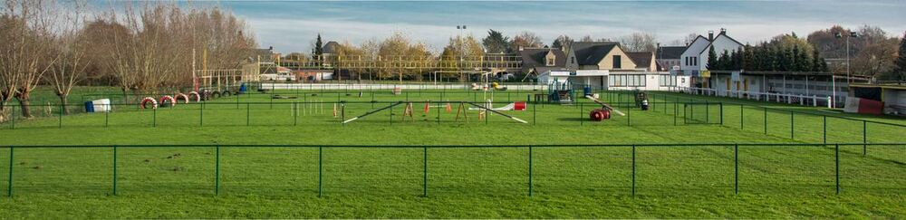

Terrein
Klik op de foto om onze terreinen te bekijken.


Gelieve bij aankomst uw wagen reglementair te parkeren op de daartoe voorziene parkeerplaatsen. Er is parkeergelegenheid vooraan naast het terrein of achteraan op het terrein. Ook op de Provinciebaan (de grote baan net voor de Ekerstraat) zijn er parkeermogelijkheden.
Gelieve na 22u de rust van de buurtbewoners te respecteren.
Plasplein
We hebben 2 plaspleinen, in 2 hoeken van het veld: achter de kantine en achteraan op de parking. Dit zijn de enige plaatsen op het terrein waar de honden hun behoefte mogen doen. Gelieve steeds de hondenpoep van uw eigen hond op te ruimen en in de speciale emmers te gooien.